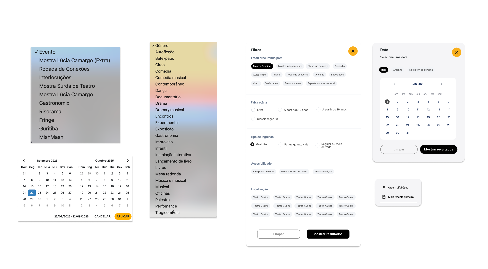
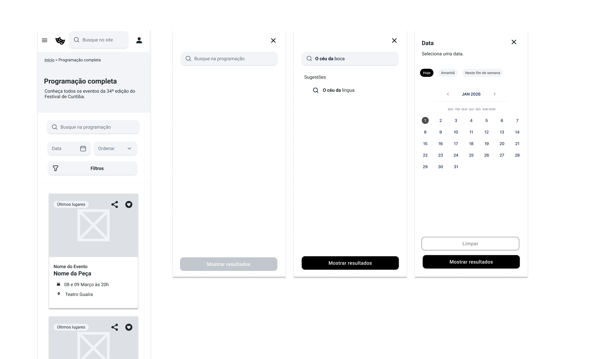
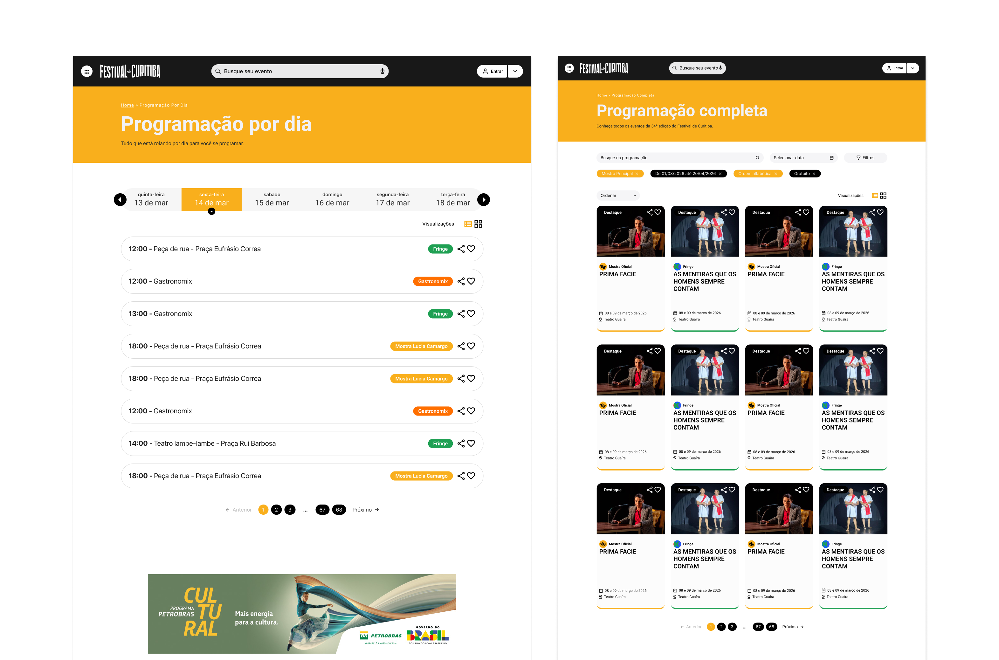

Case 02 · Information architecture · Festival de Curitiba
Designing for user discovery
Reframing a festival website around how visitors choose what to see
The Festival de Curitiba website had evolved around the festival's internal structure rather than visitor decisions.
There was no dedicated discovery experience: the homepage had a search bar, so even visitors who wanted to browse had to search first. Around 70% of traffic came from mobile, while the experience had been designed primarily for desktop.
Filters reinforced the problem with internal program names such as “MishMash,” “Fringe,” and “Risorama.”
The challenge was to turn an internal event taxonomy into an experience that helped visitors discover, evaluate, and choose events.
My role
I worked as the UX Designer and sole Content Designer, owning the new information architecture and experience from discovery through wireframes and final copy.
I partnered with the client, UI Designer, Engineering and Marketing.
- Research synthesis and UX heuristics
- Information architecture and navigation
- Taxonomy, naming, and filter strategy
- Mobile-first experience design
- Wireframes and interaction structure
- Final UX copy
The broader content strategy for the eight festival programs had already been defined by the marketing team.
From internal taxonomy to visitor language
The festival's eight event categories had their own internal naming systems, but those names didn't always communicate what visitors could expect.
I created a user-facing taxonomy:
MishMash
→Variety Show
Risorama
→Stand-up Comedy
Guritiba
→Kids' Show
Interlocuções
→Panel Discussions
The mapping became the single source of truth for Engineering, Marketing, and Content.

Designing around visitor decisions
I reorganized discovery around the questions visitors needed to answer:
What do I want to watch?
Does it fit my schedule?
Is it right for me?
The architecture shifted from festival categories to user intent.
I also moved the full program out of the homepage and created dedicated Full Schedule and Schedule by Day experiences.
Because the project didn't allow time for primary user research, I used existing research on discovery behavior, site analysis, and content/UX heuristics. Direct user validation was documented as a next step rather than treated as a proven finding.
Designing for mobile
With approximately 70% of traffic coming from mobile, I redesigned navigation, discovery, filters, event cards, schedule, and ticketing around mobile behavior rather than adapting the desktop experience.
During implementation, we found an edge case: events could change venues depending on the date. The original date chip couldn't represent that relationship, so I redesigned it as a navigable tab.

Impact
630K+
Views on the new schedule pages, which became the site's two most visited pages.
8.1 / 10
Purchase experience satisfaction, up from 6/10 in the previous edition.
8%
Website sessions resulting in a ticket purchase.
~50% fewer
Support requests related to ticket access, venues, and student-discount requirements.
9 / 10
Sponsor satisfaction with the new site experience.

What changed
The redesign moved the website from an organization-led information structure to a visitor-led discovery experience.
Visitors could navigate through their needs, preferences, and constraints without first understanding how the festival was organized.
The project also demonstrated how taxonomy, naming, information architecture, interaction design, and content hierarchy can work together to solve the same user problem.
Case 02 · Arquitetura da informação · Festival de Curitiba
Projetando a arquitetura de um site para exploração
Reestruturando o site do festival a partir do modelo mental do usuário
O site do Festival de Curitiba evoluiu a partir da estrutura interna do festival, e não pelo modelo mental dos visitantes e como eles tomavam decisões.
Não existia uma experiência dedicada à descoberta: a home tinha uma barra de busca e, por isso, até quem queria apenas explorar a programação precisava começar por uma busca. Outro problema é que cerca de 70% do tráfego vinha de dispositivos móveis, enquanto a experiência havia sido pensada principalmente para desktop.
Os filtros reforçavam esse problema com nomes internos da programação, como “MishMash”, “Fringe” e “Risorama”.
O desafio era transformar uma taxonomia interna do evento em uma experiência que ajudasse os visitantes a descobrir, avaliar e escolher o que assistir.
Meu papel
Atuei como UX Designer e Content Designer do projeto, sendo responsável pela nova arquitetura da informação e pela experiência desde a descoberta até os wireframes e textos finais.
Trabalhei em parceria com o cliente, UI Designer, Engenharia, Marketing.
- Síntese da pesquisa e análise heurística
- Arquitetura da informação e navegação
- Taxonomia, naming e estratégia de filtros
- Design da experiência mobile-first
- Wireframes e estrutura de interação
- Textos finais de UX
A estratégia de comunicação para cada programa do festival já tinha sido definida pelo time de marketing previamente.
Da taxonomia interna à linguagem do visitante
As oito categorias de eventos do festival tinham seus próprios sistemas de nomenclatura interna, mas esses nomes nem sempre deixavam claro o que os visitantes encontrariam em cada uma delas.
Por isso, criei uma taxonomia voltada para o público:
MishMash
→Show de variedades
Risorama
→Comédia stand-up
Guritiba
→Espetáculos infantis
Interlocuções
→Painéis e discussões
Esse mapeamento passou a ser a fonte de verdade para Engenharia, Marketing e Conteúdo.
Projetando a partir das decisões dos visitantes
Reorganizei a descoberta em torno das perguntas que os visitantes precisavam responder:
O que eu quero assistir?
Cabe na minha agenda?
É para mim?
A arquitetura deixou de partir das categorias do festival e passou a partir da intenção do visitante.
Também retirei a programação completa da home e criei experiências dedicadas para a Programação completa e a Programação por dia.
Como o projeto não previa tempo para uma pesquisa primária, trabalhei com pesquisas existentes sobre comportamento de descoberta, análise do site e heurísticas de conteúdo e UX. A validação direta com usuários foi registrada como uma próxima etapa, e não tratada como uma descoberta já comprovada.
Projetando para mobile
Com aproximadamente 70% do tráfego vindo de dispositivos móveis, redesenhei a navegação, a descoberta, os filtros, os cards de eventos, a programação e a jornada de compra a partir do comportamento mobile, em vez de simplesmente adaptar a experiência desktop.
Durante a implementação, identificamos um caso de exceção: alguns eventos podiam mudar de local dependendo da data. O componente de data original não conseguia representar essa relação, então o redesenhei como uma aba navegável.
Impacto
630 mil+
Visualizações nas novas páginas de programação, que se tornaram as duas páginas mais acessadas do site.
8,1 / 10
Satisfação com a experiência de compra, contra 6/10 na edição anterior.
8%
Das sessões no site resultaram em uma compra de ingresso.
~50% menos
Solicitações de suporte relacionadas aos ingressos comprados.
9 / 10
Satisfação dos patrocinadores com a experiência do novo site.
O que mudou
O redesign levou o site de uma estrutura de informação orientada pela organização do festival para uma experiência de descoberta orientada pelo usuário.
As pessoas passaram a poder navegar a partir de suas necessidades, preferências e restrições, sem precisar entender primeiro como o festival estava organizado.
O projeto também mostrou como taxonomia, naming, arquitetura da informação, design de interação e hierarquia de conteúdo podem trabalhar juntos para resolver um mesmo problema de usuário.